LabVIEW and Arduino, Python#
Task#
Task
Using the functions shown here, acquire in LabVIEW a signal with the prescribed parameters, generated with a signal generator (you can find your individual data in Moodle).
Plot the “raw” data.
Show a sensible application of the prescribed numerical procedures (
obdelava_#in the table with the data) to the acquired signal.
Prepare a short report in the Jupyter Notebook environment (3 to 10 code cells). It should show the data of the task (from the table) and make clear that you took all the parameters into account when carrying out the task (print out the signal shape appropriately…).
Submit the report in .pdf format (see the instructions for submitting homework).
Bonus: Explore and show the use of frequency filtering of data, whose purpose is to remove unwanted high-frequency noise from the acquired signal (you can use scipy.signal.lfilter). Before that, add an additive random component (noise) to the acquired signal if needed.
Despite its otherwise closed structure, the LabVIEW ecosystem includes the package manager “VI Package Manager (VIPM)”, where users can share LabVIEW code and packages that enable features and hardware that LabVIEW itself does not support.
Installing LabVIEW Community Edition
LabVIEW Community Edition is available free of charge for non-commercial use. It provides all the basic LabVIEW functions that we need in Signal Processing.
LabVIEW Community Edition is already set up for use with the Arduino system, which we will use for signal acquisition in this course. If you want to try the program on your own equipment, follow the instructions at this link.
LabVIEW Hobbyist Toolkit#
One of the free packages developed by the community is the LabVIEW Hobbyist Toolkit (formerly LINX), which allows LabVIEW to control Arduino, Raspberry Pi, and BeagleBone Black hardware.
If you installed LabVIEW Community Edition, the LabVIEW Hobbyist Toolkit is already installed on your system.
Note
To make working with the Arduino acquisition system easier in what follows, we recommend enabling the option Automatically close VISA sessions in the LabVIEW settings, in the menu Tools > Options > Environment.
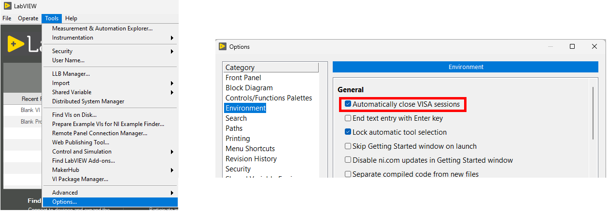
Arduino Uno (Atmega328p)#
In Signal Processing, owing to its simple integration into LabVIEW acquisition systems and its analog-to-digital conversion capability, we will learn the basics of using the Arduino Uno development board, which is based on the Atmega328p microcontroller.
The specifications of the Arduino Uno board that are essential for analog-to-digital conversion and signal acquisition are collected in the table below.
Parameter |
Value |
|---|---|
Number of analog inputs |
|
ADC bit depth |
|
USB supply voltage (VCC) |
|
Voltage measurement range |
|
Input voltage limits |
|
Warning
When acquiring signals, we must take care not to exceed the extreme allowed input voltage values of the acquisition device.
The measurement range of the Arduino is (0-5 V), and the allowed input voltage range* in our case is (-0.5-5.5 V) (see the table above). If we exceed the measurement range of the device, the signal will not be captured completely. If we exceed the allowed voltage, we can damage the acquisition system!
* The allowed voltage limit is even stricter when the system is not powered (VCC = 0). If the Arduino power cable (USB) is not connected to a USB port that supplies 5 V, the allowed input voltage range is (-0.5-0.5 V)!
Before acquiring signals with the Arduino (before we connect the signal cable to the input terminal), we must therefore always check that the system is powered through the USB connection, and that the signal we connect to any of the input terminals stays within the limits:
V_offset = 2.5
V_pp = 5
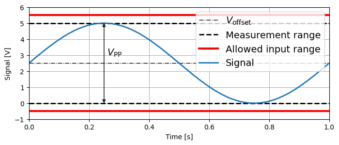
LabVIEW and Arduino#
Note
Depending on the version of the software installed on your computer, you will find the LabVIEW Hobbyist Toolkit functions presented below either in the Hobbyist menu or in the MakerHub -> LINX menu.
The LINX package provides access from LabVIEW to the analog input channels and the digital I/O channels of the Arduino board. It also supports connecting the Arduino to external devices, for example through an SPI or I2C serial connection.
We access the supported program elements through a special menu in the function palette of the block diagram, MakerHub -> LINX.
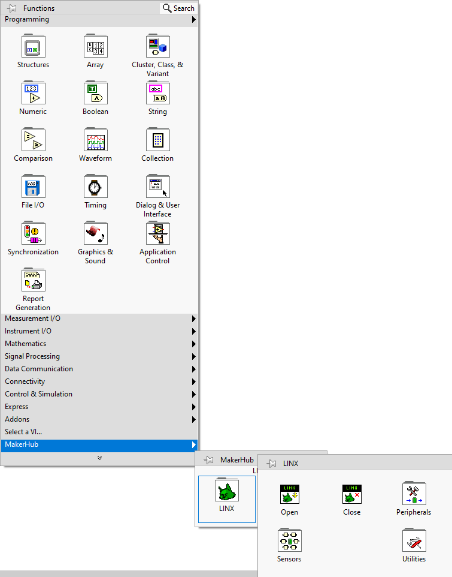
Connecting to the Arduino and the first program#
To establish a connection with the Arduino in LabVIEW, we use the special LINX library function Open.
The basic parameter when opening the connection is the COM serial port through which the Arduino is connected to our computer. If several similar serial devices are connected to the system, you can find the serial port of the connected Arduino with the Device Manager tool.
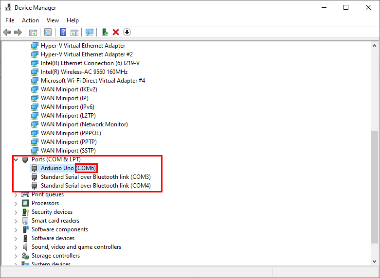
The second important setting is the speed of the serial connection (baud rate) with the Arduino. The default value is 9600, and the highest value that the Arduino Uno allows is 115200.
If you did not enable the option “Automatically close VISA sessions” above, you have to close the connection with the Close function after you finish working with the Arduino. Otherwise, you will have problems the next time you try to establish a connection.
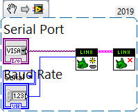
Automation with the Arduino - digital I/O terminals#
Although the Arduino includes a relatively capable 10-bit analog-to-digital converter with 6 analog input channels, owing to its relatively limited processing power it is often not the optimal choice for more advanced signal acquisition applications (for the purposes of this course, however, the capabilities of the Arduino are of course sufficient).
A more typical area of use is therefore automation and the integration of various measurement elements and hardware. This is made possible by a wide range of multipurpose digital I/O terminals (GPIO).
Let us look at the basic use of the Arduino GPIO channels, using the example of turning on / off the LED integrated on the Arduino board, whose state is tied to the value of GPIO terminal 13.
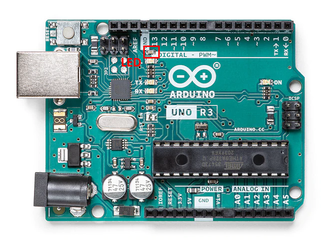
To write the Boolean value of the appropriate GPIO terminal, we will use the function Makerhub -> LINX -> Peripheral -> Digital -> Write.
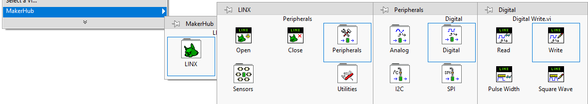
Task 1
Let us create a LabVIEW program that:
establishes a connection with the Arduino on the selected serial port,
writes the selected
Booleanvalue to digital terminal no.13,closes the connection with the Arduino.
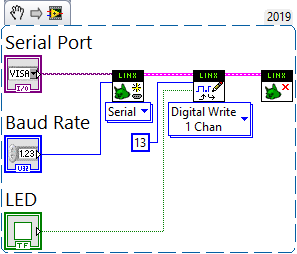
Task 2 (5 minutes)
Extend the program above so that it:
allows setting the state of the LED (on / off) in real time,
plots the history of states on a graph after each write.
Hint: in the previous exercise we plotted numeric values on a graph, but the state read from the digital terminal has to be converted appropriately before it is displayed!
Data acquisition with the Arduino#
Data acquisition usually means converting the measured signal (electric voltage) into digital form, which takes place in an analog-to-digital converter (ADC). The Arduino Uno has 6 analog inputs, which are connected to the ADC component of the board.
To convert and acquire a single point of the signal on the analog inputs, we can use the function “AnalogRead” (Makerhub -> LINX -> Peripheral -> Analog -> Read), which allows simultaneous acquisition on several channels.
Note
The circuit that we will use with the Arduino in Signal Processing to connect external signals to the analog inputs of the board through coaxial BNC connectors allows the use of analog channels A0 and A1.
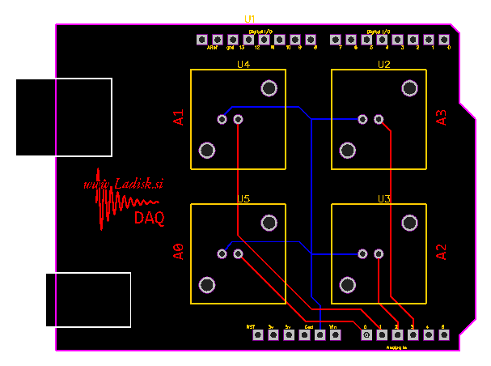
Task 3
Let us create a LabVIEW program that:
establishes a connection with the Arduino on the selected serial port,
in a loop, plots on a graph the set number of data points acquired from two analog input channels.
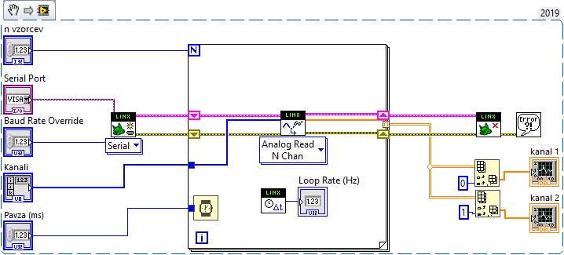
Note
The shape of the data obtained from N channels with the setting of n loop iterations is (n, N) (that is, n rows and N columns).
We obtain the data acquired on an individual analog channel by selecting an individual column (col) of the resulting array, using the Array -> Index Array function of the block diagram.
Note
Since the data obtained after the selected number of acquisition loop iterations are now in the form of an array (array), we use the function “Waveform Graph” (Graph -> Waveform Graph on the front panel) to display them.
Task 4 (10 minutes)
Extend the program above so that it:
allows choosing the sampling frequency [Hz] instead of the pause duration between successive iterations of the acquisition,
allows choosing the number of acquired signal segments with
nsamples,allows saving the signal to an
.lvmfile.
We have thus obtained a simple system that we can already use to acquire real measurement signals.
The capabilities of such a system are of course limited. In measurements, we usually want to control as many parameters of the measurement equipment as possible. The following example VI also allows setting the sensitivity of the individual measurement channels and saving the independent variable (time) together with the acquired signals.
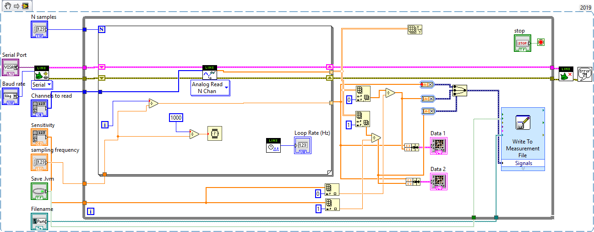
The following example also allows controlling the actual sampling frequency in a simple feedback loop:
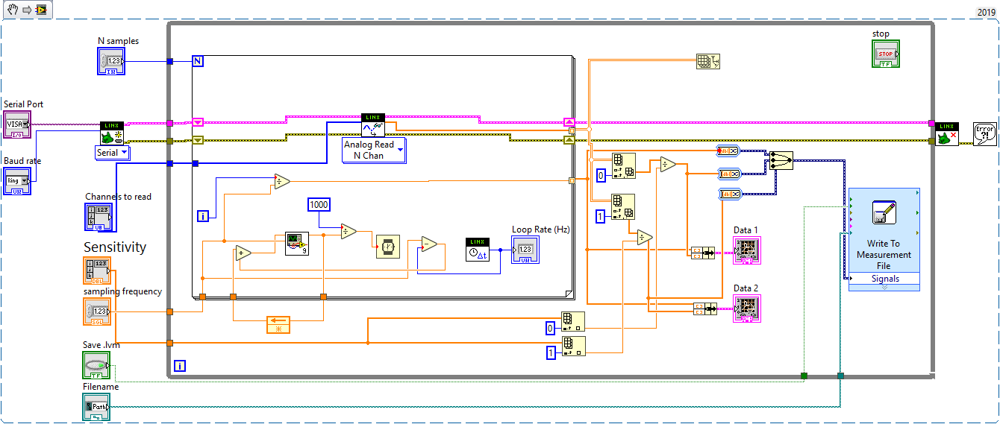
The following subprogram is also used here:
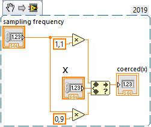
You can also download both as a zip archive.
Python - reading and processing the acquired signals#
To read data saved in .lvm files, you can use the lvm_read package.
Let us look at an example of use below.
import lvm_read
file = '../data/02/test_01.lvm'
loaded_data = lvm_read.read(file)
loaded_data.keys()
dict_keys(['Decimal_Separator', 'Writer_Version', 'Reader_Version', 'Separator', 'Multi_Headings', 'X_Columns', 'Time_Pref', 'Operator', 'Date', 'Time', 0, 'Segments'])
The loaded data are structured as a dictionary. The entry 'Segments' tells us how many segments we acquired:
loaded_data['Segments']
1
A data segment is stored in the dictionary under the key of its sequential index. If only one segment is saved, the only available index is 0.
loaded_data[0].keys()
dict_keys(['Channels', 'Samples', 'Date', 'Time', 'X_Dimension', 'X0', 'Delta_X', 'data', 'Channel names'])
Each individual segment is also a dictionary, in which we access the raw saved data with the key 'data':
loaded_data[0]['data'].shape
(100, 2)
The individual columns of data each represent one saved channel:
kanal_1, kanal_2 = loaded_data[0]['data'].T
plt.figure()
plt.plot(kanal_1, label='Channel 1')
plt.plot(kanal_2, label='Channel 2')
plt.xlabel('Sample [-]')
plt.ylabel('Voltage [V]')
plt.legend()
<matplotlib.legend.Legend at 0x7fd28e68e5d0>
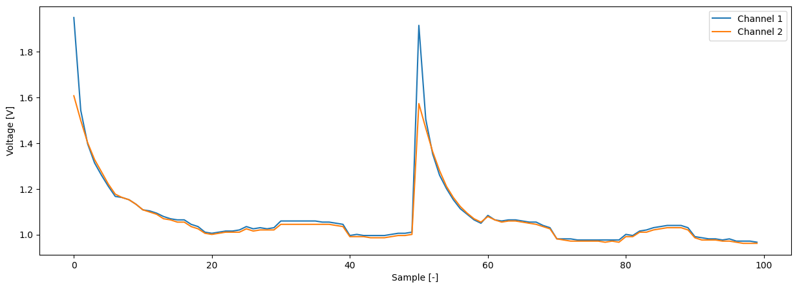
Let us also look at the case where several segments are saved in the .lvm file, separated by headers (header):
file_2 = '../data/02/test_segments.lvm'
loaded_data_2 = lvm_read.read(file_2)
loaded_data_2['Segments']
5
We can iterate over the saved segments:
all_segments = []
for seg in range(loaded_data_2['Segments']):
all_segments.append(loaded_data_2[seg]['data'])
In this case, the file also contains a column of the independent variable (time):
plt.figure()
t_start = 0
for i, segment in enumerate(all_segments):
t, k1, k2 = segment.T
t_segment = t + t_start
t_start = t_segment[-1]
plt.plot(t_segment, k1, label=f'Channel 1, segment {i}')
plt.plot(t_segment, k2, label=f'Channel 2, segment {i}')
plt.xlabel('Sample [-]')
plt.ylabel('Voltage [V]')
plt.legend(loc=(1.01, 0))
<matplotlib.legend.Legend at 0x7fd28e22a710>
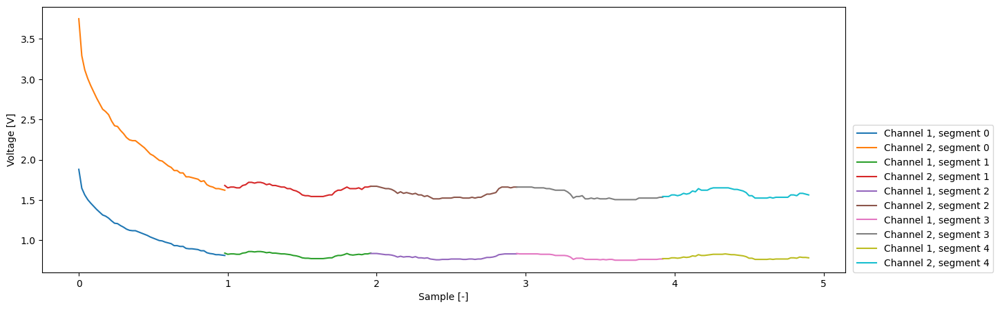
You can also combine all the segments (and process them as you like) using the appropriate NumPy functions:
complete_data = np.concatenate(all_segments)
complete_data.shape
(250, 3)
_, channel_1, channel_2 = complete_data.T
dt = _[1] - _[0]
t_complete = np.arange(len(channel_1)) * dt
plt.figure()
plt.figure()
plt.plot(t_complete, channel_1, label='Channel 1')
plt.plot(t_complete, channel_2, label='Channel 2')
plt.xlabel('Sample [-]')
plt.ylabel('Voltage [V]')
plt.legend()
<matplotlib.legend.Legend at 0x7fd28e8bcb90>
<Figure size 1500x500 with 0 Axes>
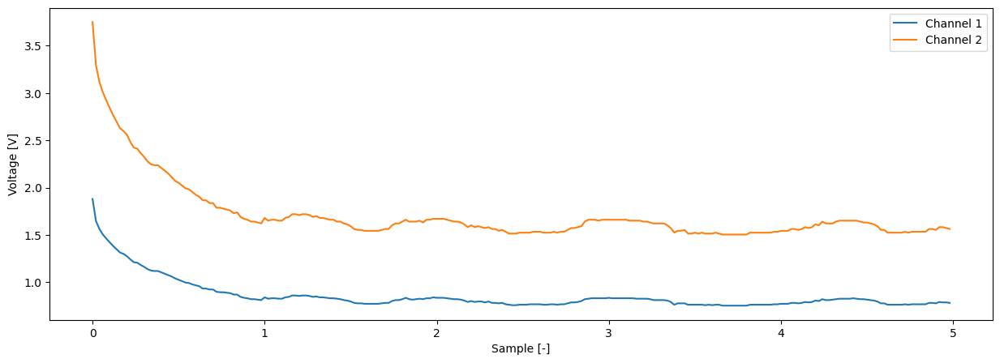
Using the signal generator (Siglent SDG 1032X)#
We will use a signal generator to simulate a periodic signal of a prescribed shape.
The figure below shows the control panel of the Siglent SDG 1032X model.
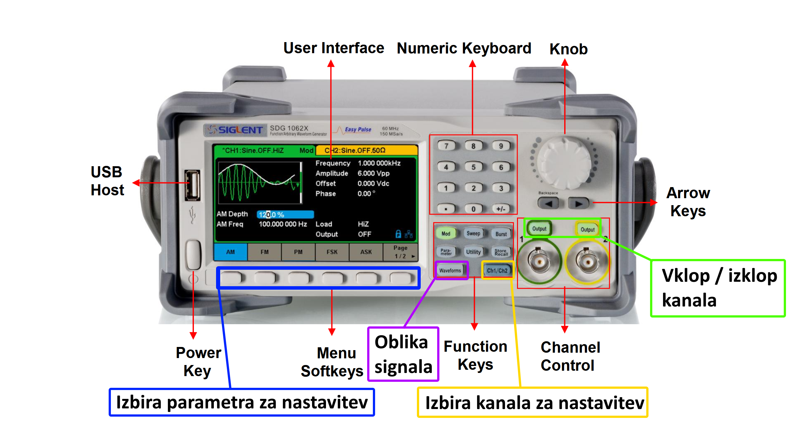
To select the signal parameter that you want to set, use the control buttons marked in blue in the figure above. You change the value of the selected parameter with the numeric keypad or the rotary knob. Make sure that you have selected, with the Ch1 / Ch2 button (yellow), the channel for which you want to set the signal. The figure below should help you with setting the given parameters.
You open the menu for selecting the waveform of the generated signal with the Waveforms button (purple). You return to the menu for setting the signal parameters with the Ch1 / Ch2 button (yellow) or the Parameter button.
The signal generator outputs the signal through the coaxial (BNC) connection on the right side of the control panel. The set signal is being output when the Output button of the selected channel is lit (green).
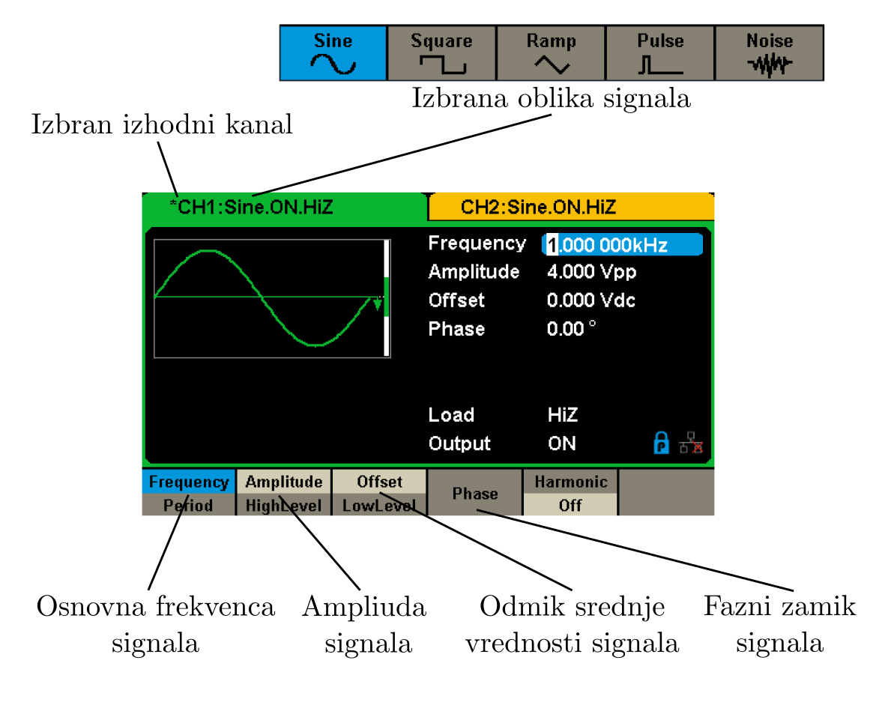
For more information, see also the quick user guide.
Warning
Before you turn on the signal output with the appropriate Channel button, check that all the settings of the selected channel are correct and that you have not exceeded the measurement range of the acquisition system. Only then connect the acquisition system to the output channel of the signal generator!